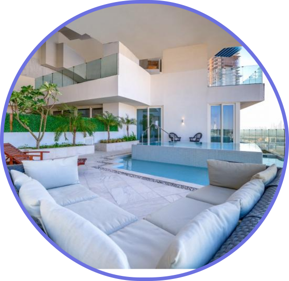
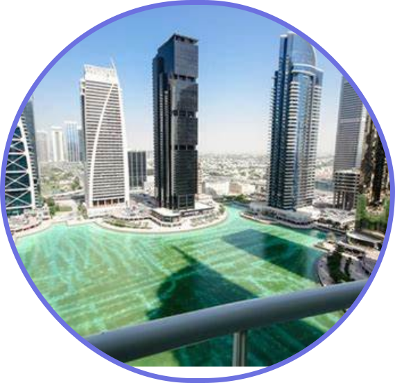
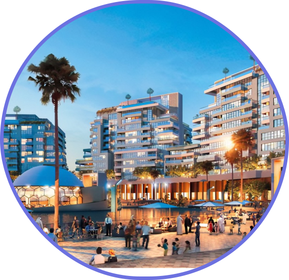
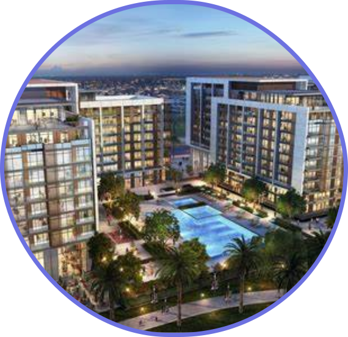
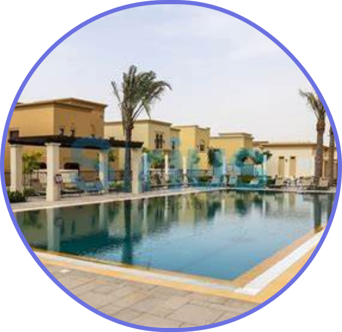
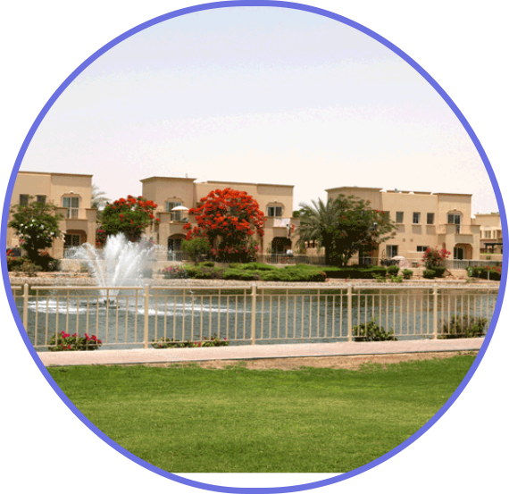

If you’re a pet parent, then you know that our furry friends are just as much a part of the family as everyone else. Whether you are a doting dog owner or have a feline friend in the house, it’s essential to know which residential areas in UAE are best suited for you and your furry companion. To help you pick the right home, we’ve compiled a list of the top pet-friendly communities in UAE.

Jumeriah Village Circle (JVC)
We start our list of the best pet-friendly neighbourhoods in Dubai with Jumeirah Village Circle (JVC). With countless green spaces and parks throughout this lovely community, the apartments for rent in JVC are a great option for dog parents. JVC also has a good choice of pet grooming services, veterinary clinics and pet supply stores in the area, making it extremely convenient for pet parents!
Downtown Dubai
The community of Downtown Dubai is a good option for pet lovers to live in. If your landlord permits, small dogs and indoor cats are the best options for pet-owners who rent apartments in Downtown Dubai.
Another benefit is that this neighbourhood is home to Burj Park, one of the pet-friendly parks in Dubai. Here, not only can you and your pet have fun-filled playtime but you can also meet other pet owners living in the vicinity.

Jumeirah Lake Towers
The Jumeirah Lake Towers community has no shortage of wide, beautiful pathways around the lake where you can walk your pets. However, anyone with a large pet that needs more space to run around should note there is also a JLT Pet Park where your furry friends can get much-needed exercise and playtime. That said, the neighbourhood is still great for small pet owners as it houses plenty of grassy areas, along with a handful of pet-friendly cafes and restaurants. There are several pet-grooming centres in the neighbourhood as well to bring your furry friend in for some pampering.

Dubai Sports City (DSC)
Comprising of an array of apartment complexes, Dubai Sports City is another area to live with your pets in Dubai. As the name suggests, DSC is known primarily for sports. There are many sports facilities in Dubai Sports City that draw single professionals, couples and families. If you want to live with your furry friend here, please note that the apartments in Dubai Sports City are reasonably priced and spacious.

Dubai Hills Estate
Comprising of an array of apartment complexes, Dubai Sports City is another area to live with your pets in Dubai. As the name suggests, DSC is known primarily for sports. There are many sports facilities in Dubai Sports City that draw single professionals, couples and families. If you want to live with your furry friend here, please note that the apartments in Dubai Sports City are reasonably priced and spacious.

Arabian Ranches
Arabian Ranches is another pet-friendly community in Dubai with large open spaces, spacious homes with private gardens and walking paths. The homes in Arabian Ranches are a good option for homebuyers with pets. You can also find villas for rent in Arabian Ranches, most of which come with spacious gardens that are ideal for pets.

Springs
The centrally-located community of The Springs also makes it to our list of best areas for pet-owners in Dubai. There are pet stores in and around The Springs, making it one of the top pet-friendly villa communities in Dubai. There is also a fenced dog park located behind Springs 8, which is perfect to give your pooch some leash-free time!